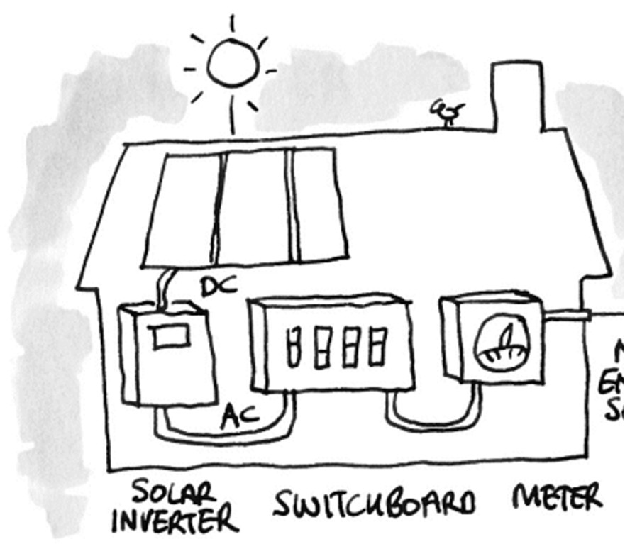
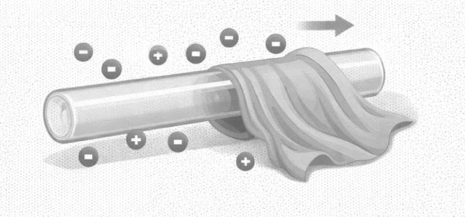
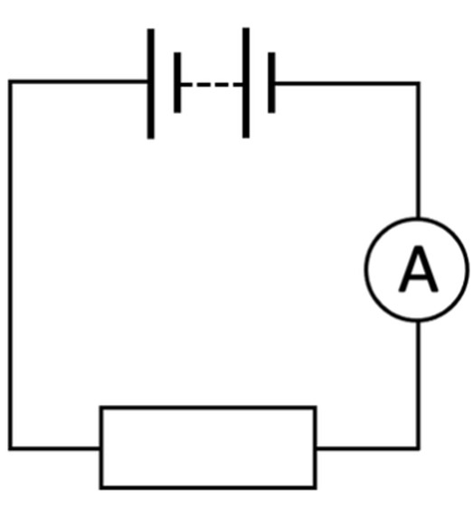
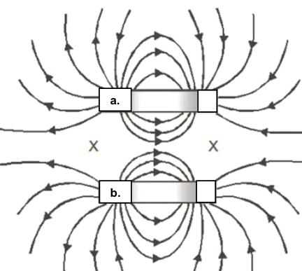

Section A: Multiple choice (10 marks)
The Earth significantly absorbs all of the following types of electromagnetic radiation from the Sun except:
All of these statements about greenhouse gases are correct except:
Greenhouse gas molecules have three or more atoms.
Which statement correctly describes IR radiation?
EM waves are transverse, and greenhouse gases absorb and re-emit IR rather than reflecting it. Water vapour is a greenhouse gas.
Which of the following is a carbon sink in the carbon cycle?
All of the following are benefits of renewable energy such as solar, wind and tidal except:
Which correctly describes conventional current in a circuit?
Questions 7 and 8: a variable power supply (2–12 V) is connected in series with a variable resistance (1–6 Ω) and an ammeter.
What would you observe when varying the voltage or the resistance?
The voltage is now set to 8 V and the resistance to 4 Ω. Which would increase the power used in the circuit?
P = VI = V2 / R, so with the voltage fixed, a lower resistance means more current and more power.
Magnetic field lines are drawn with arrows pointing:
Which statement describes an electromagnet but not a permanent bar magnet?
Section B: Short answer (26 marks)
Question 1 (5 marks)
Paul and Ringo are discussing climate change. Paul says, "The root cause of climate change is the greenhouse effect. There is nothing beneficial about the greenhouse effect." Ringo disagrees: "Without the greenhouse effect, there would be no life on Earth."
Evaluate these statements, giving scientific reasons for whether Paul or Ringo is correct.
- Ringo is correct (1 mark).
- The greenhouse effect keeps the Earth's equilibrium temperature at about 15–18 °C, instead of about −15 °C without it (1 mark).
- This lets life on Earth thrive. It is the enhanced greenhouse effect, from extra greenhouse gases, that causes climate change (1 mark).
As carbon dioxide levels increase, greenhouse gases absorb more IR radiation, so the Earth retains more heat and reaches a higher equilibrium temperature.
Explain why the temperature doesn't keep rising, but settles at an equilibrium temperature.
As the surface temperature rises, the Earth emits more IR radiation (1 mark). Eventually the increased outgoing energy balances the increased heat absorbed, so the temperature settles at an equilibrium, but at a higher temperature (1 mark).
Question 2 (4 marks)
The Sun is a key renewable energy source. Humans harness solar power in two ways.
Name the two ways humans harness solar power, including the energy transformations for each.
- Solar thermal: solar → heat energy (→ kinetic → electrical, in a solar thermal power station) (1 mark).
- Solar electric (photovoltaic): solar → electrical energy (1 mark).

Name the device labelled a in the diagram (between the panels and the switchboard) and explain its purpose.
An inverter (1 mark). It converts the DC from the solar panels into AC for household use (1 mark). (You must say what it converts, not just that it "converts electricity".)
Question 3 (3 marks)
Teflon is a material that gains electrons when rubbed with a fabric such as wool.

In which direction do electrons flow when the rod is rubbed with the cloth?
Explain why it is easier for electrons to be transferred from one material to another, rather than protons, which also carry charge.
Electrons orbit outside the nucleus (1 mark), so they are more mobile and can be removed easily; protons are held tightly in the nucleus (1 mark).
Question 4 (6 marks)
John and George wired a 16 V battery in series with a resistor R of unknown resistance, and an ammeter, which reads 6.2 A.

Describe how they should connect a voltmeter to measure the voltage across resistor R.
The voltmeter is connected in parallel with R, with one lead on each side of the resistor.
Find the resistance of resistor R.
R = V / I = 16 ÷ 6.2 = 2.58 Ω.
Calculate the power used by resistor R, and give the unit.
P =
P = VI = 16 × 6.2 (1 mark) = 99.2 (1 mark) W (watts) (1 mark).
Question 5 (2 marks)
Magnetic field lines have been drawn around two bar magnets, as shown.

The pole labelled a is the .
The pole labelled b is the .
Field lines point away from north poles and into south poles.
Question 6 (2 marks)
The symbol shows the direction of the current in a wire. Region a is just to the left of the wire and region b is just to the right.
In region a, the magnetic field points .
In region b, the magnetic field points .
Right-hand grip rule: with the current into the page, the field circles clockwise, so it points up on the left and down on the right.
A region of magnetic field is directed out of the page. A current flows diagonally downwards to the right. Describe the direction of the magnetic force on the current.
Using the right-hand slap rule (fingers out of the page for the field, thumb down and to the right along the current), the force is perpendicular to the current (1 mark), pointing down and to the left (1 mark).
A graph shows the voltage–current relationship for a resistor of R = 7.5 Ω. The point labelled a on the voltage axis lines up with a current of 15 A on the line. Find the voltage at point a.
V = IR = 15 × 7.5 = 112.5 V ≈ 113 V.